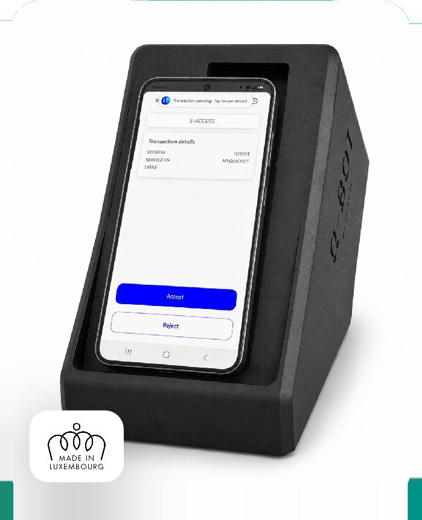
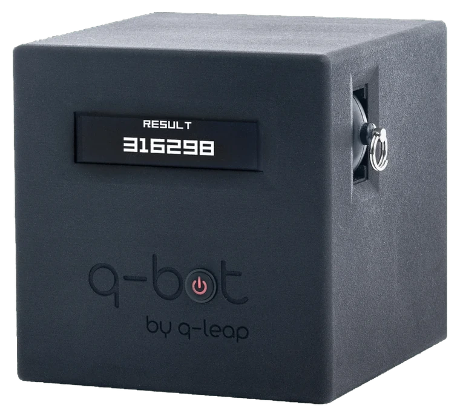

Plug & Play
No software installation required. Connect Q-Bot to your network and start immediately. Zero configuration needed.
Q-Bot is the physical device that eliminates the last manual step in your automated test pipeline: two-factor authentication. Your test suite then runs from start to finish without a human in the loop.


Step 1 of 4
Q-Bot is set up next to the tester's workstation and connects to the company network. No software installation required.
Q-Bot is connected over USB to a genuine Android device. It taps the screen of the real 2FA app, exactly where a finger would, through ADB. Not a simulator, not a stub.
< 10 seconds to retrieve the code
A Raspberry Pi 5 (Cortex A76, 4 GB) coordinates everything. Driven from a Web interface or the REST API, from Selenium, Cypress, Appium or your pipelines.
Pi 5 Wi-Fi, Bluetooth 5.0 BLE, Gigabit Ethernet
The format is meant to sit beside the tester's screen and be forgotten, not to take up half the desk.
Bertrange designed and built at Q-Leap's headquarters
Book a demoBorn from an innovation combining electronics, software and design, Q-Bot automates LuxTrust dual authentication without human intervention, directly from your existing testing tools.
View technical specs

Q-Bot, a 100 % Made in Luxembourg solution, automates two-factor authentication (2FA), whether via mobile applications like LuxTrust (the leading solution in Luxembourg) or via other authentication apps deployed in other countries.
Because it removes the one step their tools cannot get past. Q-Bot drives the genuine 2FA app on a physical Android phone connected over USB, whether LuxTrust, itsme, Microsoft or Google Authenticator. The run picks up exactly where it stopped, with nobody watching the screen and no shared secret key.
No software installation required. Connect Q-Bot to your network and start immediately. Zero configuration needed.
No tester needed to approve the 2FA step.
The tap lands on the real application. Nothing is guessed from an image, so nothing can be misread.
Intuitive Web interface to create scenarios and API available for integration with your automation tools.
Any team whose automated tests stall on a 2FA step: testers, automation engineers, developers, project managers. Q-Bot also serves business process automation (RPA) projects that require strong authentication. One condition only, and it is the real limit: the second factor has to run in an Android app.
Q-Bot supports your testing, integration and business process automation (RPA – Robotic Process Automation) projects that require secure validation through mobile two-factor authentication.
Q-Bot supports your Web, Mobile or Desktop applications. Use cases are numerous: authenticating a user, creating a user account, confirming an e-commerce transaction, resetting a user's password, validating a money transfer, signing a document, requesting an official document...
Q-Bot is the result of the Q-Leap team's expertise. Imagined and developed in-house by software testing experts, this solution was born from a real need encountered in the field: our own, but also our clients'.
Compatible with Selenium, Katalon, Robot Framework, and all other automation solutions thanks to its simple, secure API.
From the first enclosure assembled in our own offices to today's generation.

An enclosure under ten centimetres a side, built in-house at Q-Leap's offices, with its small front display. It proved that two-factor authentication could be approved with nobody in front of the screen.
The whole mechanism now fits inside a closed enclosure, designed and manufactured in Luxembourg. The smartphone sits on the front: same principle, a fraction of the footprint.
Explore the 3D modelWe are putting together the roadmap for the next generation together with the teams using Q-Bot every day. Missing a capability? Tell us about it.
Suggest an improvementQ-Bot is a one-of-a-kind robot designed to automate two-factor authentication (2FA) in the real apps that carry it. It enables the automation of testing processes that were previously inaccessible.
Q-Bot enables automation of critical test cases requiring two-factor authentication: 2FA login, document signing, transaction validation, official requests. Without Q-Bot, these scenarios require human intervention, making full automation impossible.
Testers can cover all application features without any omissions. Q-Bot is simple (no software installation), fast (the 2FA step resolves in under 10 seconds), deterministic (the tap lands on the genuine app, there is nothing to recognise), and accessible via Web interface or API.